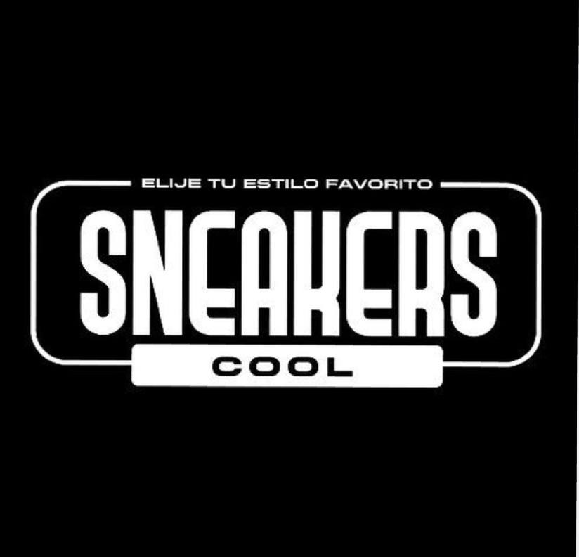

𝓒𝓸𝓷𝓸𝓬𝓮 𝓝𝓾𝓮𝓼𝓽𝓻𝓪 𝓗𝓲𝓼𝓽𝓸𝓻𝓲𝓪
𝚂𝚗𝚎𝚊𝚔𝚎𝚛𝚜 𝙲𝚘𝚘𝚕 𝚎𝚜 𝚞𝚗𝚊 𝚎𝚖𝚙𝚛𝚎𝚜𝚊 𝚎𝚌𝚞𝚊𝚝𝚘𝚛𝚒𝚊𝚗𝚊 𝚍𝚎 𝚌𝚘𝚗𝚏𝚎𝚌𝚌𝚒ó𝚗 𝚢 𝚍𝚒𝚜𝚝𝚛𝚒𝚋𝚞𝚌𝚒ó𝚗 𝚍𝚎 𝚌𝚊𝚕𝚣𝚊𝚍𝚘 𝚍𝚎𝚙𝚘𝚛𝚝𝚒𝚟𝚘 𝚢 𝚊𝚌𝚌𝚎𝚜𝚘𝚛𝚒𝚘𝚜 . 𝙵𝚞𝚎 𝚏𝚞𝚗𝚍𝚊𝚍𝚊 𝚎𝚗 𝚀𝚞𝚒𝚝𝚘 𝚎𝚗 𝟸𝟶𝟷𝟿 𝚢 𝚎𝚜 𝚞𝚗𝚊 𝚌𝚊𝚍𝚎𝚗𝚊 𝚐𝚛𝚊𝚗𝚍𝚎 𝚎𝚗 𝚜𝚞 𝚙𝚊í𝚜. 𝙳𝚎𝚜𝚍𝚎 𝟸𝟶𝟷𝟿 𝚎𝚚𝚞𝚒𝚙𝚊 𝚊 𝚕𝚘𝚜 𝚓𝚞𝚐𝚊𝚍𝚘𝚛𝚎𝚜 𝚍𝚎 𝚞𝚗𝚊 𝚕𝚒𝚐𝚊 𝚋𝚊𝚛𝚛𝚒𝚊𝚕, 𝚍𝚎𝚜𝚍𝚎 𝟸𝟶𝟸𝟷 𝚛𝚎𝚊𝚕𝚒𝚣𝚊 𝚎𝚡𝚙𝚘𝚛𝚝𝚊𝚌𝚒𝚘𝚗𝚎𝚜 𝚍𝚎 𝚌𝚊𝚕𝚣𝚊𝚍𝚘𝚜 𝚊 𝚘𝚝𝚛𝚘𝚜 𝚙𝚊í𝚜𝚎𝚜. 𝙰𝚍𝚎𝚖á𝚜 𝚍𝚎 𝚌𝚘𝚗𝚏𝚎𝚌𝚌𝚒𝚘𝚗𝚊𝚛, 𝚒𝚖𝚙𝚘𝚛𝚝𝚊, 𝚍𝚒𝚜𝚝𝚛𝚒𝚋𝚞𝚢𝚎 𝚢 𝚌𝚘𝚖𝚎𝚛𝚌𝚒𝚊𝚕𝚒𝚣𝚊 𝚖𝚊𝚛𝚌𝚊𝚜 𝚒𝚗𝚝𝚎𝚛𝚗𝚊𝚌𝚒𝚘𝚗𝚊𝚕𝚎𝚜 𝚍𝚎 𝚒𝚗𝚍𝚞𝚖𝚎𝚗𝚝𝚊𝚛𝚒𝚊 𝚢 𝚊𝚌𝚌𝚎𝚜𝚘𝚛𝚒𝚘𝚜 𝚍𝚎𝚙𝚘𝚛𝚝𝚒𝚟𝚘𝚜 𝚝𝚊𝚕𝚎𝚜 𝚌𝚘𝚖𝚘 𝙰𝚍𝚒𝚍𝚊𝚜, 𝙽𝚒𝚔𝚎, 𝙿𝚞𝚖𝚊, 𝙹𝚘𝚛𝚍á𝚗. 𝙰𝚌𝚝𝚞𝚊𝚕𝚖𝚎𝚗𝚝𝚎 𝚌𝚘𝚗 𝚕𝚊 𝚟𝚎𝚗𝚝𝚊 𝚘𝚗𝚕𝚒𝚗𝚎 𝚜𝚎 𝚑𝚊 𝚍𝚊𝚍𝚘 𝚊 𝚌𝚘𝚗𝚘𝚌𝚎𝚛 𝚖á𝚜 𝚕𝚊 𝚝𝚒𝚎𝚗𝚍𝚊 𝚌𝚘𝚗𝚝𝚊𝚗𝚍𝚘 𝚊𝚜í 𝚌𝚘𝚗 𝚞𝚗𝚊 𝚎𝚡𝚝𝚎𝚗𝚜𝚊 𝚕𝚒𝚜𝚝𝚊 𝚍𝚎 𝚌𝚕𝚒𝚎𝚗𝚝𝚎𝚜 𝚢 𝟹 𝚜𝚞𝚌𝚞𝚛𝚜𝚊𝚕𝚎𝚜 𝚊 𝚗𝚒𝚟𝚎𝚕 𝚍𝚎𝚕 𝙴𝚌𝚞𝚊𝚍𝚘𝚛. 𝚃𝚊𝚖𝚋𝚒é𝚗 𝚎𝚜𝚝𝚊𝚖𝚘𝚜 𝚙𝚛ó𝚡𝚒𝚖𝚘𝚜 𝚊 𝚏𝚊𝚋𝚛𝚒𝚌𝚊𝚛 𝚖𝚊𝚛𝚌𝚊𝚜 𝚍𝚎 𝚜𝚞 𝚙𝚛𝚘𝚙𝚒𝚎𝚍𝚊𝚍 𝚌𝚘𝚖𝚘 𝚕𝚘 𝚜𝚎𝚛á𝚗 𝚜𝚎𝚗𝚎𝚊𝚔𝚎𝚛𝙲, 𝚃𝚛𝚞𝚜𝚝, 𝙰𝚜𝚝𝚛𝚘 𝚂𝚙𝚘𝚛𝚝 𝚢 𝚖𝚊𝚛𝚌𝚊𝚜 𝚙𝚊𝚝𝚛𝚘𝚌𝚒𝚗𝚊𝚍𝚘𝚛𝚊𝚜 𝚍𝚎 𝙳𝚎𝚙𝚘𝚛𝚝𝚒𝚟𝚘 𝚀𝚞𝚒𝚝𝚘 𝚍𝚎𝚜𝚍𝚎 𝚎𝚕 𝟸𝟶𝟸𝟹, 𝚎𝚗𝚝𝚛𝚎 𝚘𝚝𝚛𝚊𝚜 𝚖𝚊𝚛𝚌𝚊𝚜 𝚍𝚎𝚕 𝚐𝚛𝚞𝚙𝚘 𝙼𝚊𝚛𝚊𝚝𝚑𝚘𝚗. 